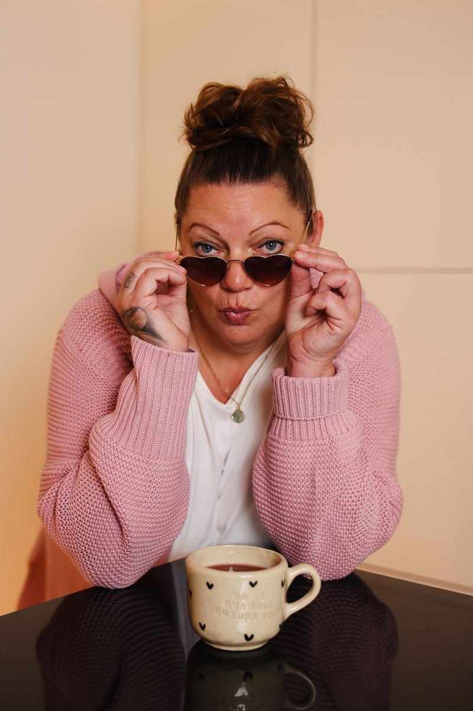

Hallo du Liebe, schön, dass du da bist. Hier findest du alles für die Momente, in denen dir gerade alles zu viel wird. Du musst nichts richtig machen. Such dir einfach aus, was dir jetzt gut tut.
Wenn es zu viel wird, wissen wir oft gar nicht, was wir eigentlich brauchen. Dann machen wir einfach weiter. Halt kurz an und tipp an, was stimmt.
Ein paar Minuten nur für dich. Setz dich hin, so wie es gerade passt, und hör einfach zu.
Du klopfst mit zwei Fingern ganz sanft. So fest, dass es sich gut anfühlt. Mach einfach mit mir mit und sprich die Sätze nach.
Zwei Runden reichen. Zuerst sprichst du aus, was gerade schwer ist. In der zweiten Runde, was leichter sein darf.
Deine eigenen Worte wirken am besten. Die Vorschläge helfen dir beim Anfangen. Was du hier schreibst, bleibt nur auf deinem Gerät.
Ein Platz am Boden, an dem du dir deine Leichtigkeit abspeicherst. Wann immer du sie brauchst, stellst du dich einfach wieder hin.
Zieh dir eine Karte. Lies sie langsam, vielleicht zwei, drei Mal. Und nimm sie mit in deinen Tag.
Es darf leicht sein.
Speicher sie dir als Sperrbildschirm. Dann ist sie da, wenn es zu viel wird, ganz ohne Suchen.
Am Handy das Bild lange drücken, sichern und in den Einstellungen als Hintergrund wählen.

Ich hab jahrzehntelang funktioniert. Schon meine Kindheit war nicht einfach, und da hab ich früh gelernt, mich anzupassen.
Dann Friseurlehre, Verkauf, fast neunzehn Jahre im Backoffice einer Bank, immer wieder mit Unterbrechungen. Ich hab so lang versucht, meinen Platz zu finden. Gefunden hab ich ihn nicht.
Irgendwann bin ich draufgekommen, ich pass halt nirgends so richtig rein. Und bei all dem Herumprobieren und Anpassen ist mir meine Leichtigkeit verloren gegangen.
Heute weiß ich, Leichtigkeit ist kein Luxus. Sie trägt mich durch die schweren Tage. Und manchmal heißt das einfach, Herzlbrille auf, Tee in die Hand, auch wenn die Wäsche wartet.
Genau das will ich dir mit diesem Paket mitgeben.